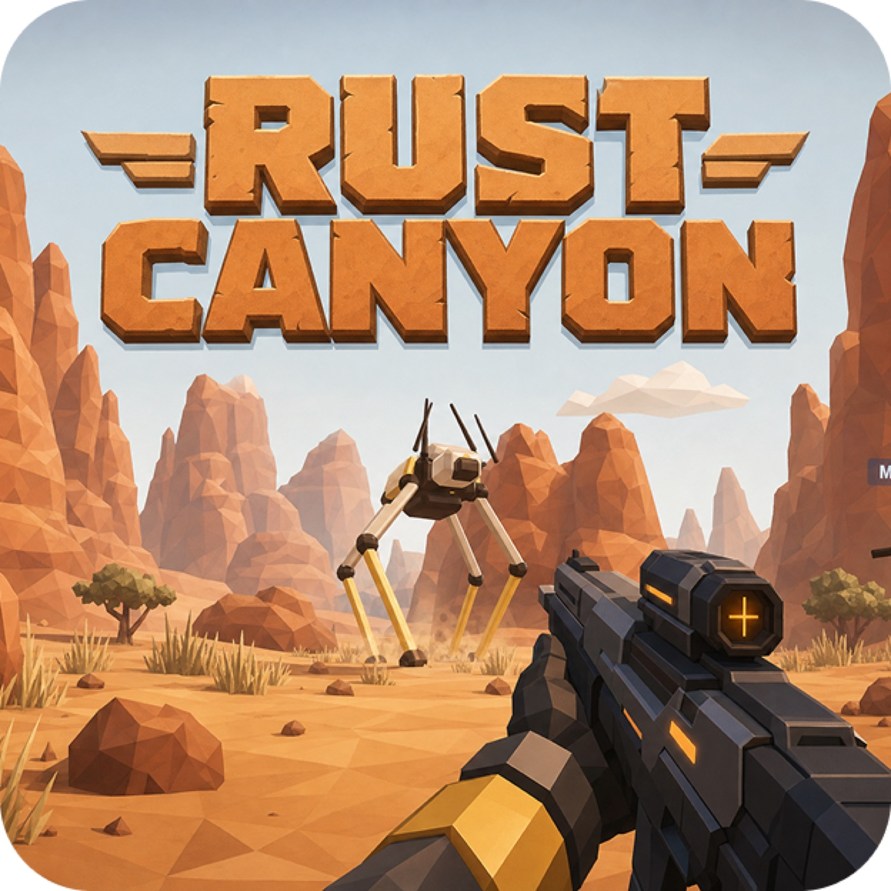

Higgsfield AI
1一句话结论
Higgsfield AI 不是十几个彼此平行的产品，而是一套视觉内容生产栈：底层的 Soul、DOP、Soul ID 等模型负责生成和控制画面；Cinema Studio、Canvas 与 Marketing Studio 把模型变成专业制作工具；Supercomputer 负责拆任务、选工具和组织多步执行；Apps、Websites 与 Games 则把结果交付成可使用、可发布的产品。MCP/CLI 只是让 Claude、Cursor 等外部 Agent 进入这套系统的调用入口，3D 目前也是其中一项生成能力，并非单独出售的 3D 基础模型。
公司既有自研视觉模型，也聚合 Kling、Veo、Sora、Seedance、Wan 等第三方模型。投资价值取决于三个问题：US$200M 年化收入的留存与毛利是否真实，自研模型在总用量中的占比是否提升，以及 Supercomputer、Apps 与 Games 能否把一次性生成扩展成有持续使用、分发和反馈的创意工作流。
2融资历程完整时间线
| 时间 | 轮次/事件 | 金额 | 估值 | 投资方/参与方 | 备注 | 来源 |
|---|---|---|---|---|---|---|
| 2024-04 | Seed | US$8M | 未披露 | Menlo Ventures 领投，Charge Ventures、Bitkraft Ventures、General Catalyst 等参与 | 初期聚焦个性化移动端 AI 视频 | BusinessWire |
| 2025-09 | Series A | US$50M | 未披露 | GFT Ventures 领投，BroadLight、NextEquity、AI Capital、Menlo、Alpha Square 等参与 | 扩展 click-to-video 与社交媒体创作平台 | Higgsfield / PR Newswire |
| 2026-01 | Series A extension | US$80M；Series A 累计 >US$130M | >US$1.3B | Accel、AI Capital Partners、Menlo Ventures 等参与 | 同时披露 US$200M annual run rate | Higgsfield / PR Newswire |
3公司概览
| 公司 | Higgsfield, Inc. / Higgsfield AI |
| 官网 | https://higgsfield.ai/ |
| 成立时间 | 2023 年；Web 创作平台于 2025 年上线 |
| 总部 | San Francisco, 美国 |
| 创始人与团队 | Alex Mashrabov（联合创始人兼 CEO，前 Snap 生成式 AI 负责人）、Yerzat Dulat（联合创始人）；团队覆盖生成模型、电影制作和消费产品 |
| 核心定位 | 将视觉模型、专业制作工具、创意 Agent 和可发布产品连接成同一套内容生产系统 |
| 模型引擎 | Soul 2.0 / Soul Cinema 负责图像风格；Higgsfield DOP / Keyframes 负责视频与镜头控制；Soul ID / Soul HEX 负责人物与视觉一致性；同时提供第三方模型目录 |
| 专业工作台 | Cinema Studio / Canvas 面向影视与视觉制作；Marketing Studio / Click-to-Ad 面向广告和营销内容 |
| Agent 调度层 | Supercomputer 负责理解目标、拆分步骤、选择模型与工具、传递素材并交付多步骤结果；Skills、AI Employees 和 Connectors 是其中的可复用任务与连接模块 |
| 交付产品 | Apps、Websites 与 Games；3D 作为模型能力嵌入 Apps、Games、Supercomputer 和 Cinema Studio 的部分流程 |
| 外部入口 | MCP/CLI 让 Claude、Cursor 等外部 Agent 调用 Higgsfield 的生成与游戏工具；它不是独立模型，也不是传统公共 REST API |
| 商业模式 | 个人订阅、生成 credits 与加购、企业合同；MCP/CLI 使用同一账号 credits，当前没有独立公共 API 套餐 |
| 最新融资 | 2026-01 Series A extension US$80M；Series A 累计超过 US$130M |
| 最新估值 | 2026-01 融资后估值超过 US$1.3B |
| 公开经营数据 | 2026-01 披露 US$200M annual run rate；2026-07 官网称 25M+ 用户、850M+ generations、约 6M generations/day |
Higgsfield 的主归属应是“基础模型 / 视觉生成模型”，同时保留“模型层 + 应用层”标签。原因是公司明确对外销售自研、可复用的视觉模型和生成系统，但真正产生收入的入口又是面向创作者与企业的完整应用。它和 Black Forest Labs 这类更纯粹的模型供应商不同，也和只聚合第三方模型的创作工具不同。
4业务模式与收费方式
4.1 订阅套餐：先买每月 credits，再按产品消耗
Higgsfield 定价页的核心不是“某个产品每月多少钱”，而是“套餐先给 credits，图像、视频、Agent、Apps 和 Games 再消耗同一份 credits”。以 2026-07-20 页面显示的年付口径为准：
| 套餐 | 每月 credits | 当前公开价格 | 并发与权益 | 适合用户 |
|---|---|---|---|---|
| Starter | 200 | US$15/月（按年付） | 部分模型与功能；最多并行 2 个视频、4 张图像；可进入 Supercomputer | 低频个人创作者 |
| Plus | 1,000 | US$49/月，或 US$39/月（按年付） | 全部模型与功能、新功能优先体验；最多并行 6 个视频、8 张图像 | 高频创作者和小团队 |
| Ultra | 3,000（基础档） | US$129/月，或 US$99/月（按年付） | 最多并行 8 个视频、8 张图像；Supercomputer 最多 10 个定时任务和 10 个并行对话 | 代理商、专业创作团队与高频生产者 |
Ultra 页面还可选 6,000 和 9,000 credits 的更高用量档，具体价格随页面选项变化。价格可因促销、账单周期和地区调整，因此尽调时应保留当日报价截图和客户发票，而不是把网页价格当成永久合同价。
4.2 各产品如何消耗 credits
本节只回答“钱怎么扣”，不代表这些名称处在同一个产品层级。模型、工作台、Agent、交付产品和 MCP/CLI 的关系见第 4 节。
| 产品或使用方式 | 谁付费 | 计费单位与公开示例 | 需要注意的区别 |
|---|---|---|---|
| 标准图像与视频生成 | 操作者 | 按模型、分辨率、时长和次数扣 credits；定价页示例中 Nano Banana Pro 约 2 credits/次，Kling 3.0 的 8 秒 720p 视频约 14 credits/次 | 不同模型的上游成本差异很大；用户看到的 credits 不等于公司毛利相同 |
| Supercomputer | 发起 Agent 任务的用户 | 每个生成步骤使用与手动生成相同的 credit rate，但多步任务会把成本加总；官方示例为两步骤约 90 credits / US$4.50，完整制作约 200 credits / US$10 | Agent 并未额外提高单步价格，只是一次运行更多步骤；执行前显示总成本，只对已完成步骤扣费 |
| Apps 与 Websites | 创建者支付构建时的 credits；终端用户登录自己的 Higgsfield 账号后使用自己的 credits | Apps 使用普通文本、图像、视频或 3D 生成 credits；官方示例 Plushies 中 US$1 可生成 20 张图片或 2 个视频 | 这是示例 App 的价格，不是所有 App 的统一报价；终端用户自带 credits，创建者不承担他人使用时的生成费 |
| Games 与 3D | 游戏创建者在构建期支付 credits | 生成代码、2D/3D 资产、角色、环境、声音及失败重试都可能消耗 credits；官方案例中三款多人游戏合计 US$68（含失败生成） | US$68 只是三个案例的实际消耗，不是游戏套餐价；官方当前没有单独披露 3D 模型订阅或托管价目表 |
| MCP/CLI | 连接 Claude、Cursor 等客户端的 Higgsfield 账号持有人 | 使用与 Web 产品相同的 credits，每次按模型和输出规格扣费 | 这是开发者入口，不是公开 API；不需要独立 API key，也没有单独 API 定价 |
| 企业工作区 | 品牌、广告代理和企业团队 | 年度或定制合同，公开网页未披露席位价、最低消费或 credits 折扣 | 企业版包含权限、协作、数据保护和赔偿等合同条款，不能用个人订阅价推算企业 ACV |
定价页的 Unlimited models 和 Free Generations 只适用于 higgsfield.ai 网站，不适用于 MCP/CLI、Canvas 或 Supercomputer。这是评估用户真实单位成本时的重要区别：同一套餐在不同入口不一定拥有相同的“无限”权益。
4.3 企业创意工作流
企业版面向品牌、广告代理、营销、设计、销售和培训团队，销售的不只是单次生成，而是一条可重复的内容流水线：从 brief、脚本和产品链接出发，自动选择模型，生成图像和视频，再完成角色一致性、镜头、剪辑、本地化与发布。官网称企业客户可把内容生产时间降低 90%，并显示 100,000+ teams 的使用口径；这些是公司自述，尽调时仍需核验付费团队数、合同金额和续约率。
4.4 应用、游戏与创作者生态
Higgsfield Apps由 Agent 自动完成前端、后端、数据库、登录和生成模型接入，并发布到 name.higgsfield.app。官方称可连接 15+ 图像、视频和 3D 模型，每天最多构建 20 个 Apps，上线时已有 500+ Apps 可浏览。Websites 使用同一个 Supercomputer 构建体系，官方目前未公布独立网站托管套餐。
Higgsfield Games可从一段自然语言生成可玩的浏览器游戏，自动处理代码、托管、分享链接、多人 lobby 与 state sync，并可生成 3D 世界、角色、环境和资产。这里的 3D 是 Apps/Games 中的产品能力，官方并未披露一个可独立评测、独立售卖的 Higgsfield 3D 基础模型，因此不应把公司简单重分类为 Meshy 或 Tripo 那样的专门 3D 模型公司。
对平台经济而言，App 终端用户自带 credits，降低了创建者的持续推理费，同时把下游使用转化为 Higgsfield 账号和 credits 消费。Higgsfield Earn 又向创作者支付报酬。如果应用使用、游戏玩法、重新制作、分享和付费可以转化为产品路由与评估信号，它们比单纯的生成次数更接近“用户是否真的得到价值”。但公司尚未公开这些信号是否进入模型训练或路由系统。
5产品如何一起运行
最简单的记法： Soul / DOP / Soul ID 是“发动机”；Cinema Studio / Canvas / Marketing Studio 是“工作台”；Supercomputer 是“项目经理”；Apps / Websites / Games 是“交付成品”；MCP/CLI 是“外部门口”。3D 是其中可调用的一项能力，不是与上述各项平行的独立业务层。
5.1 用户实际有两条主要使用路径
| 路径 | 用户从哪里开始 | 系统怎样运行 | 最后得到什么 |
|---|---|---|---|
| 直接制作 | 图像、视频、音频页面，或 Cinema Studio、Canvas、Marketing Studio | 用户自己选择模型、人物、镜头、风格和编辑步骤；不一定经过 Supercomputer | 一张图、一段视频、一条广告或一套影片镜头 |
| 委托 Agent 完成 | Supercomputer、Apps、Websites、Games，或从 Claude / Cursor 经 MCP/CLI 进入 | Agent 把目标拆成多个步骤，选择 Higgsfield 自研或第三方模型，调用工作台、代码和托管能力，并在步骤之间传递素材 | 一套营销内容、一个可发布 App、一个网站、一款浏览器游戏或一组 3D 资产 |
两条路径最终使用的是同一套 credits、模型和工作流。区别在于：直接制作由用户逐步操作；Agent 路径由系统规划和组合步骤。不是每个任务都要经过 Supercomputer，也不是 Supercomputer 自己生成所有图像和视频。
5.2 四层产品栈
| 层级 | 包含什么 | 这一层负责什么 | 不应怎样理解 |
|---|---|---|---|
| 1. 模型引擎 | Soul、DOP、Keyframes、Soul ID / HEX，以及 Kling、Veo、Sora、Seedance、Wan 等第三方模型 | 生成图像、视频、声音或 3D 资产，并控制人物、镜头和风格 | 第三方模型出现在目录里，不等于这些模型由 Higgsfield 训练 |
| 2. 专业工作台 | Cinema Studio、Canvas、Marketing Studio、Click-to-Ad | 把模型能力包装成镜头设计、编辑、广告制作、团队协作和审批流程 | 它们是制作环境，不是新的基础模型 |
| 3. Agent 调度层 | Supercomputer、Skills、AI Employees、Connectors | 理解目标、拆分任务、选择模型与工具、传递素材、记录上下文并组织交付 | Supercomputer 是调度者，不是图像或视频模型本身 |
| 4. 交付与分发层 | Apps、Websites、Games | 把模型与 Agent 生成的内容、代码和资产变成可发布、可分享、可继续使用的产品 | 这一层的价值来自使用和分发，不只来自单次生成质量 |
MCP/CLI 不属于四层中的某一层。它是一条外部访问通道，让 Claude、Cursor 等 Agent 进入 Higgsfield，再调用上述模型、工作台或游戏工具。
5.3 第一层：模型引擎负责“生成什么”
| 模型或能力 | 主要输出 | 在系统中的作用 | 官方入口 |
|---|---|---|---|
| Soul 2.0 / Soul Cinema | 时尚、人物、广告和电影感图像 | Higgsfield 自研图像引擎，决定视觉风格、人物质感和部分单位生成成本 | 查看 Soul 2.0 |
| Higgsfield DOP / Keyframes | 具有镜头运动、起止帧和多镜头连续性的短视频 | Higgsfield 自研视频与镜头控制能力，把“推、拉、摇、移”等导演语言转成生成约束 | 查看视频产品 |
| Soul ID / Soul HEX | 跨图像和视频保持相同人物、身份、服装和色彩 | 为广告系列、虚拟角色和连续内容保存可复用的视觉身份 | 查看 Soul ID |
| 第三方模型目录 | Kling、Veo、Sora、Seedance、Wan 等模型各自擅长的输出 | 补足能力覆盖；Higgsfield 提供统一界面、素材传递、路由和 credits 计费 | 查看模型与产品目录 |
当用户选择 Kling、Veo 或 Sora 时，底层生成模型并不是 Higgsfield 的资产。此时 Higgsfield 的差异化来自统一工作流、人物和素材管理、模型选择、生成控制与交付体验；同时也会承担上游模型费用、价格竞争和供应连续性风险。
5.4 第二层：专业工作台负责“怎样把素材做成作品”
| 工作台 | 用户实际操作 | 可调用的引擎 | 适合的任务 |
|---|---|---|---|
| Cinema Studio / Canvas | 设置人物、地点、道具、镜头、焦段、光线和色彩；编辑多镜头项目；邀请团队评论与协作 | Higgsfield 自研模型及平台内第三方图像、视频模型 | 影片、广告、故事板和需要角色一致性的连续镜头 |
| Marketing Studio / Click-to-Ad | 输入商品链接、brief、品牌素材或脚本，生成 UGC、产品演示和多渠道广告 | 工作流和路由由 Higgsfield 提供，生成步骤可调用多家模型 | 社交广告、电商素材、本地化营销和批量版本测试 |
工作台和模型的区别是：模型负责产生像素或视频帧，工作台负责保存项目素材、控制镜头、组织版本和把生成结果带入下一步。用户可以直接操作这些工作台，也可以让 Supercomputer 调用它们。
5.5 第三层：Supercomputer 负责“谁来组织多步任务”
Supercomputer不是另一个视觉模型，而是整套系统的 Agent 调度层。用户只描述最终目标，系统再完成以下步骤：
- 理解目标，并把任务拆成调研、脚本、图像、视频、音频、代码、修改和发布等步骤。
- 为每一步选择合适的 Higgsfield 自研模型、第三方模型、工作台或外部工具。
- 在步骤之间传递人物、商品、品牌素材和生成结果，尽量保持项目上下文一致。
- 执行前显示预计 credits，执行后交付内容包、网站、App、游戏或其他成品。
Skills、AI Employees 与 Connectors 不是与 Supercomputer 平行的终端产品。它们分别是可复用任务模板、预置 Agent 和连接 Slack、Google Drive、Notion、Gmail、Figma 等系统的接口，供 Supercomputer 在执行任务时调用。官方完整指南展示了多步骤视频任务和逐步 credits 消耗。
5.6 第四层：Apps、Websites 与 Games 负责“把结果交付成什么”
| 交付形态 | 它是什么 | 用户最终得到什么 | 3D 在哪里 |
|---|---|---|---|
| Apps 目录 | Higgsfield 已经做好的单用途创作工具与模板，例如商品图、人物效果、视频编辑和广告工具 | 直接运行一个明确任务并取得图像、视频或素材 | 某些 App 可以调用 3D 生成，但 3D 不是 Apps 的唯一内容 |
| Apps Builder | 用户用自然语言构建自己的生成式 App；Agent 处理前后端、数据库、登录、模型连接和发布 | 一个可通过链接访问、可由其他用户使用的 App | 可连接 15+ 自研及第三方图像、视频与 3D 模型 |
| Websites | 使用 Supercomputer 的代码、视觉和发布流程构建品牌站、活动页或内容漏斗 | 一个已发布的网站，而不只是一组页面图片 | 可以嵌入生成的 3D 资产，但未披露独立 3D 托管价格 |
| Games | 从文字描述生成代码、画面、角色、声音、托管和分享链接，并可加入多人 lobby 与 state sync | 一款可玩的 2D 或 3D 浏览器游戏 | 3D 角色、环境和世界是游戏资产，由 Agent 调用生成能力后放进游戏 |

这里最容易混淆的是 3D。官方确实把 3D object generation 列入 Supercomputer，也在 Games、Apps 和 Cinema Studio 的 hybrid workflow 中使用 3D；但截至 2026-07-20，公司没有披露可独立评测、独立定价或开放模型卡的 Higgsfield 3D 基础模型。因此，3D 应理解为“这套平台可以调用并交付的能力”，不能直接等同于 Meshy 或 Tripo 的专门 3D 模型壁垒。
5.7 MCP/CLI 只是外部入口
Higgsfield MCP/CLI让用户在 Claude、Cursor 等 Agent 客户端中直接调用 Higgsfield 的图像、视频、角色和游戏工具。它与整套产品栈的关系是：
Claude / Cursor → Higgsfield MCP/CLI → Supercomputer 或具体生成工具 → 自研及第三方模型 → 返回素材、项目或游戏。
MCP/CLI 使用同一个 Higgsfield 账号和 credits，没有独立公共 API key 或单独 API 套餐。它的投资意义是增加开发者分发和外部 Agent 使用入口，而不是新增一种基础模型或独立收费业务。
5.8 技术护城河与数据飞轮应该怎样判断
技术护城河不应只用“有没有自研模型”判断。Higgsfield 更值得关注的是其 cinematic logic layer 能否把用户意图翻译成镜头、节奏、角色和画面控制，再把最终使用、修改和传播结果反馈给模型与工作流。
公开合同已经给出部分答案。普通用户条款明确允许公司使用提示词、上传素材、生成结果和反馈训练、标注、分类及改进模型；隐私政策也说明用户共享的文字、图片、视频和提示词可用于训练算法。Higgsfield Earn 条款继续适用普通用户条款，而投稿审核、真实互动表现和是否满足活动要求还可能提供比单纯生成内容更有价值的结果标签。相反，企业版页面明确承诺不使用企业客户数据训练模型，因此品牌私有素材、企业审批意见和内部工作流数据不能直接视为 Higgsfield 可跨客户复用的训练资产。
因此，Higgsfield 具备形成消费端模型与路由飞轮的合同和数据基础，但目前还不能确认已经形成可验证的数据飞轮。公司没有公开这些信号实际进入自研模型训练的比例、训练后带来的效果提升，也没有公开与 Kling、Veo、Sora 等第三方模型供应商之间的数据复用限制。投资判断应表述为“具备形成数据飞轮的条件”，而不是“已经形成数据飞轮”。
6商业化与运营指标
| 指标 | 最新公开口径 | 解读 |
|---|---|---|
| 年化收入 | US$200M annual run rate（2026-01-15，公司披露） | 低于一年达到较大规模，但需核验净收入、退款、促销和毛利 |
| 用户 | 25M+（官网，复核于 2026-07-20） | 消费分发已经形成规模；注册用户不等于付费用户 |
| 累计生成 | 850M+ generations，其中 300M+ videos（官网，复核于 2026-07-20） | 高频使用为模型和工作流反馈提供潜在数据来源 |
| 日生成量 | 约 6M generations/day，其中约 2M videos/day（官网） | 推理成本和上游模型分成会直接影响毛利 |
| 企业采用 | 官网称 100,000+ teams，并提及 Fortune 500 agencies | 需进一步区分试用团队、付费团队和大型企业合同 |
| 创作者计划 | 10,000+ creators commissioned，累计支付 US$1M+ | 有助于形成内容供给，也可能构成获客补贴 |
| Apps | 2026-07-09 官方称已有 500+ Apps，每个账号每天最多构建 20 个 | 证明产品已上线，但尚需 MAU、留存、付费转化和每 App credits 消耗 |
| Games 案例 | 2026-06-19 官方案例：三款多人游戏共花费 US$68，获得近 4,000 玩家和 121 次 remix | 是单组官方案例，不能代表平台平均成本或用户留存 |
US$1.3B 以上估值对应 US$200M 年化收入的静态 P/ARR 下限约 6.5 倍。这个倍数看起来不高，但不能直接按 SaaS 理解：若收入大量来自低毛利的第三方模型 credits 转售，价值应更接近内容计算平台；若自研模型和企业工作流占比提升，并形成较高留存和毛利，则可获得更高软件倍数。
7单位经济性 / 关键财务逻辑
Higgsfield 的收入可以拆成个人订阅、额外 credits 和企业合同，直接成本则包括自研模型推理、向第三方模型采购生成量、Apps/Games 代码执行与托管、存储与带宽、支付手续费、内容审核和创作者补贴。核心单位经济性不是单纯“每个用户付多少钱”，而是每美元收入对应多少 GPU、第三方模型、代码执行和托管成本。
尽调应要求按产品和模型拆分 generation gross margin：自研 Soul / DOP 的毛利理论上可由自身推理效率控制；Veo、Kling、Sora 等外部模型通常需要向供应商支付费用，毛利和产品连续性受上游影响。Supercomputer 会将多个生成步骤叠加，Apps 让终端用户自带 credits 可降低创建者负担，Games 则额外增加代码运行、多人状态和托管成本。还应按用户 cohort 核验首次订阅、三个月留存、credits 购买、企业扩张和退款。US$200M annual run rate 只有在留存、毛利和现金消耗可持续时才有投资意义。
8竞争格局
| 公司 | 核心位置 | 与 Higgsfield 的区别 |
|---|---|---|
| Runway | 自研视频模型与专业影视编辑平台 | 自研模型和影视品牌更成熟；Higgsfield 更强调多模型聚合、社交广告与快速工作流 |
| Kling AI | 快手体系的视频与图像模型、消费应用和 API | 模型能力与产业分发更强；Higgsfield 是独立公司，工作流更跨模型 |
| Luma AI | 视频、图像和世界模型及 Dream Machine | 更强调自研模型与专业创意平台；Higgsfield 的增长和收入披露更强 |
| Pika | 低门槛、社交传播友好的视频特效应用 | Pika 更偏消费特效；Higgsfield 覆盖专业制作和企业营销 |
| Black Forest Labs | 上游图像基础模型与 API | BFL 更纯模型层；Higgsfield 直接拥有创作者和企业应用入口 |
| Adobe / Canva | 既有创意软件、版权内容和企业分发 | 大厂工作流和采购优势强；Higgsfield 迭代更快，但更易被功能整合 |
| Lovable / Bolt / Replit | 代码、应用与网站构建 | 通用应用逻辑和软件工程更成熟；Higgsfield Apps 更强调内置图像、视频和 3D 生成 |
| Meshy / Tripo | 专门 3D 模型、资产生成和 API | 3D 模型深度和独立产品更清晰；Higgsfield 将 3D 作为 Apps/Games 的一个工具，尚未证明自研 3D 模型壁垒 |
在同类对比中，Higgsfield 的优势是收入增速、消费分发和工作流完整性，弱点是自研模型与外部聚合边界仍不够透明。最重要的尽调不是比较某一次视频榜单，而是拆解付费用户为何留在平台，以及多少使用由 Higgsfield 自有能力而非可替换的第三方模型驱动。
9团队与背景
Alex Mashrabov 曾任 Snap 生成式 AI 负责人，并创立被 Snap 收购的 AI Factory，具备把生成式模型做成消费产品的经验。Yerzat Dulat 是联合创始人。团队同时招募模型研究、视频生成、电影制作、产品增长和企业销售人才，这种组合与公司的“模型 + 创作应用”路线匹配。
团队优势是懂消费增长、社交内容和视觉产品，不只做研究 demo；风险是从高速增长的消费工具转向企业平台，需要补齐安全、版权、权限、审计、销售和客户成功能力。创始团队与投资人持股、关键模型团队稳定性和第三方模型采购关系仍需在一级市场材料中核验。
10主要风险
- 年化收入可能受到促销、年付预收、credits 会计口径和短期爆款增长影响，需核验真实 ARR、留存与退款。
- 视频生成推理成本高，且第三方模型采购可能使收入增长不能同步转化为毛利。
- Kling、Runway、Luma、Adobe、Canva、OpenAI 和 Google 均可把相似功能打包进已有渠道。
- 平台同时强调自研模型与多模型聚合，若用户主要为第三方模型付费，技术护城河会被高估。
- 训练数据、人物肖像、版权、deepfake、广告真实性和未成年人内容带来法律与品牌风险。
- 创作者快速迁移和模型价格下降可能压低订阅留存及 credits 单价。
- 高速扩张会增加内容审核、支付欺诈、企业安全和跨境数据治理压力。
- Apps 与 Games 将公司带入代码安全、恶意应用、游戏内容审核、多人托管和可用性责任，也可能分散视觉模型团队的注意力。
- 3D 已经出现在产品中，但自研与合作模型边界、资产质量、版权和单位成本都未披露。